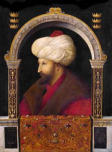

|  |
| The Sultan of Two Lands and the Khan of Two Seas |
| 30 March 1432 CE | Muhammad Al-Fatih is born |
| 1437 CE | Muhammad Al-Fatih is appointed governor of Amasya |
| 1444 CE | Muhammad Al-Fatih inherits the throne after Sultan Murad II abdicates |
| 10 November 1444 CE | Murad II resumes defeats Crusader forces at the Battle of Varna |
| 1451 CE | Muhammad Al-Fatih rules as a sultan for 2nd time after his father murad II dead |
| 31 August 1452 CE | Construction of fortress Rumelihisari is complete. |
| 6 April 1453 CE | Siege of Constantinople begins. |
| 29 May 1453 CE | Ottoman Sultan Muhammad Al-Fatih sacks Constantinople. |
| 1454 CE - 1459 CE | Ottoman campaigns in Serbia. |
| 1456 CE | Ottoman forces besiege Trebizond. |
| 1461 CE | Ottoman forces under Sultan Mehmed II capture Trebizond, ending the Empire of Trebizond. |
| 1463 CE - 1470 CE | The Mosque of the Conqueror is constructed in Constantinople |
| 1465 CE | Mehmed II oversees construction of Topkapi Palace, the new seat of his empire. |
| 3 May 1481 CE | Muhammad Al-Fatih falls ill during a military expedition and subsequently dies, leading to the succession of his eldest son Bayezid II to the throne. |
| Born | Mehmed II 30 March 1432 Edirne, Ottoman Sultanate |
|---|---|
| Died | 3 May 1481 (aged 49) Hünkârçayırı (Tekfurçayırı), near Gebze, Ottoman Empire |
| Parent | Murad II (Father) Hüma Hatun (Mother) |
| Child | Bayezid II(successor) Cem Sultan Şehzade Mustafa Gevherhan Hatun |
| Religion | Sunni Islam |
| Cause Of Death | possibly from complications associated with his gout. |